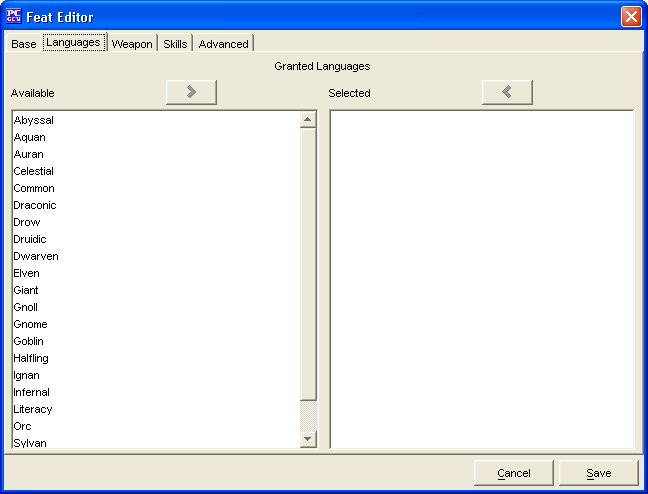

The Languages Tab is used to add a Bonus Languages for the Feat being created that will be available during character creation.
The two Granted Languages windows, Available and Selected are used to create a list of Granted Languages.
The Cancel and Save buttons, which appear on every tab, are used to either cancel the Feat creation or save it to the customFeats.lst file.